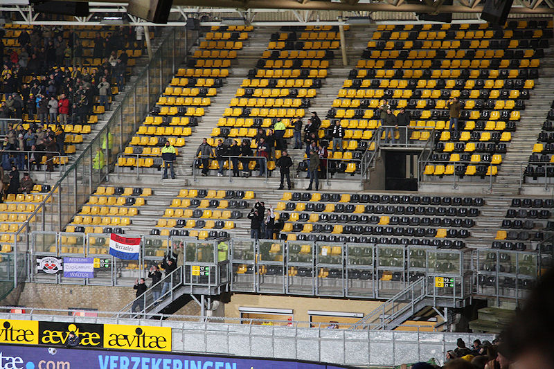
Zelfs voor een vrijdagavondwedstrijd zijn 30 uit-supporters aan de magere
kant. Ook de Roda-vakken waren akelig leeg.
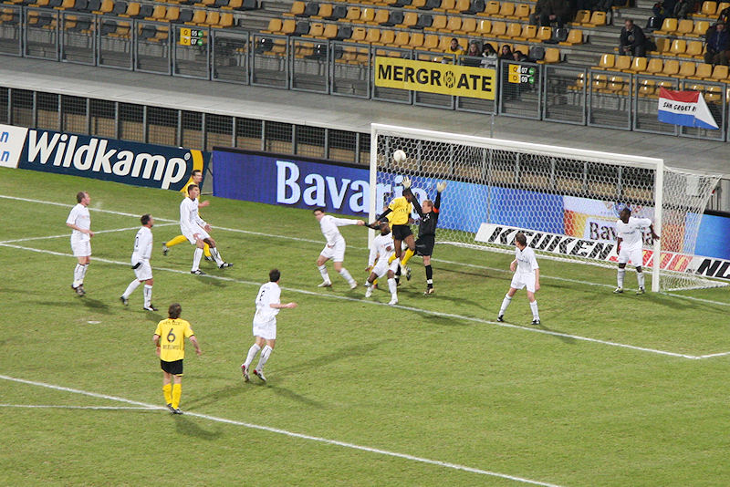
Na een halfuurtje keuvelend voetbal waarin Heracles een iets betere
balcirculatie heeft maar geen kansen creëert, is het Roda dat via
verdediger Addo uit een hoekschop 1-0 scoort, (26').
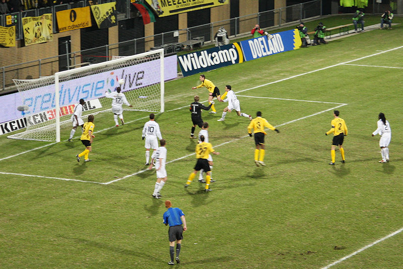
Dit is ongekend voor Roda: alweer een doelpunt uit een corner. Het is Oper
die bij de tweede paal ongehinderd kan inkoppen: 2-0, (50').
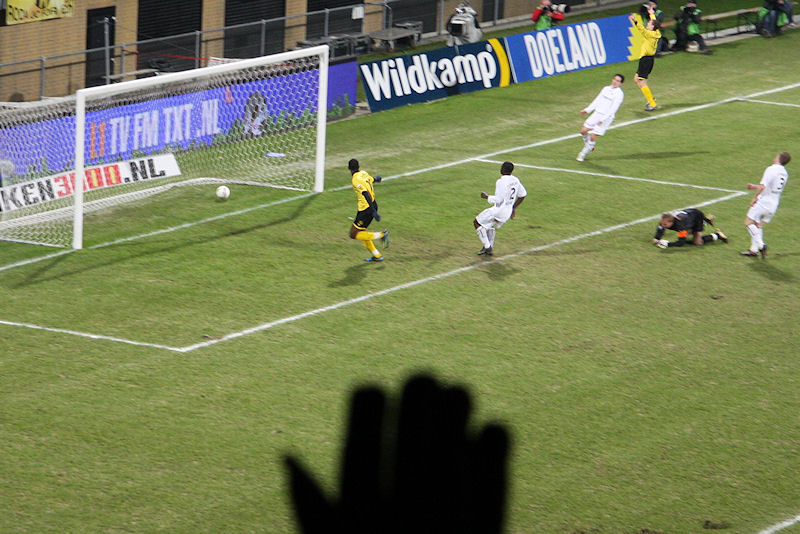
De excellerende Cissé kan eenvoudig intikken in een verlaten doel: 3-0,
(53').
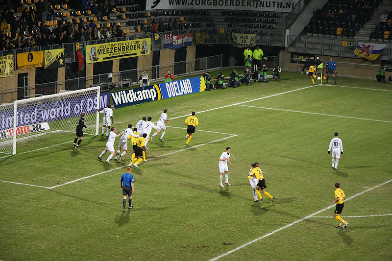
Deze corner, genomen door Bodor, levert niks op.
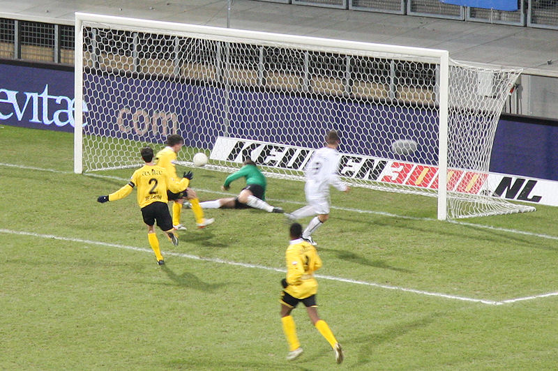
Invaller Schulmeister scoort vlak voor tijd 1-3, (89').
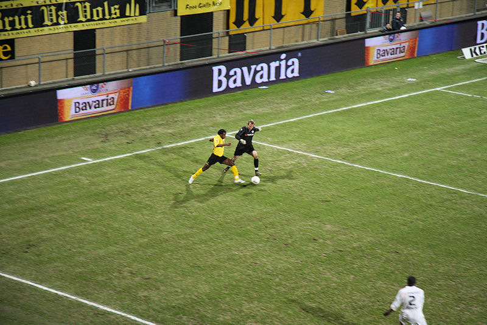
Invaller Matondo jaagt doelman Pieckenhagen op buiten de zestien.
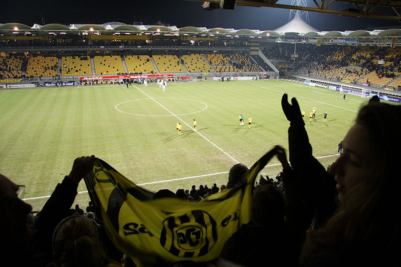
Het stadion stroomt snel leeg vanwege de diepvriestemperatuur.
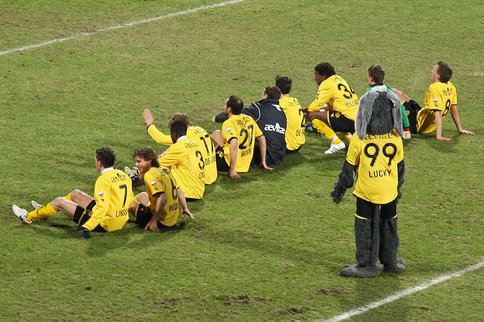
Toch nog een humba hupsakee....
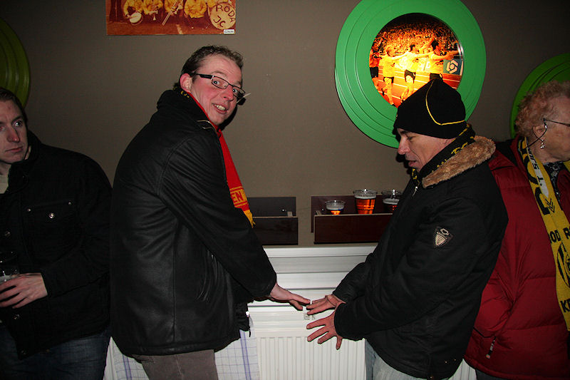
Ontdooien in de Kickoff.
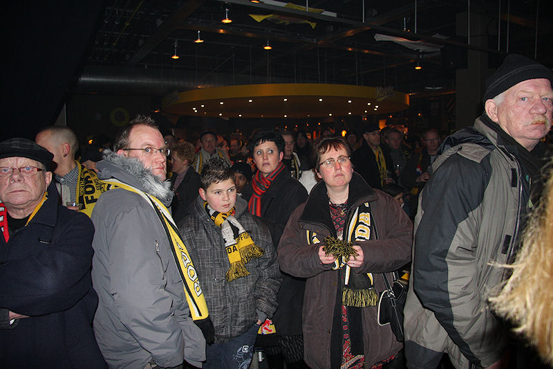
Deze mensen die kijken of het einde van de wereld nabij is volgen de
persconferentie.
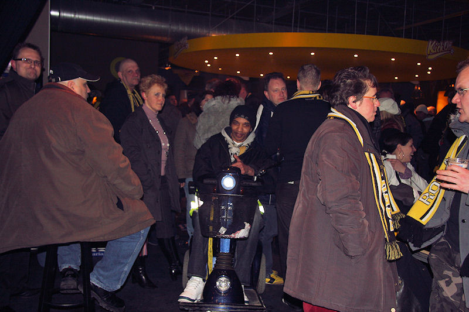
Statistieken:
Roda JC - Heracles Almelo 3-1 (1-0). 26. Addo
1-0, 50. Oper 2-0, 53. Cissé 3-0, 89. Schulmeister
3-1. Scheidsrechter: Van Meenen. Toeschouwers:
13.840. Gele kaart: Hadouir en Janssen (Roda),
Quansah en Boakye (Heracles).
Roda JC: Castro; Delorge (46. Linssen), De
Fauw, Addo en De Jong; Janssen, Meeuwis en Bodor;
Hadouir, Oper (86. Vormer) en Cissé (67.
Yulu-Matondo).
Heracles: Pieckenhagen; Boakye, Maertens,
Quansah en De Vries; Breukers, Van den Bergh (70.
Schulmeister) en Fledderus; Douglas (70. Bajer),
Dost en Hakola (84. John).